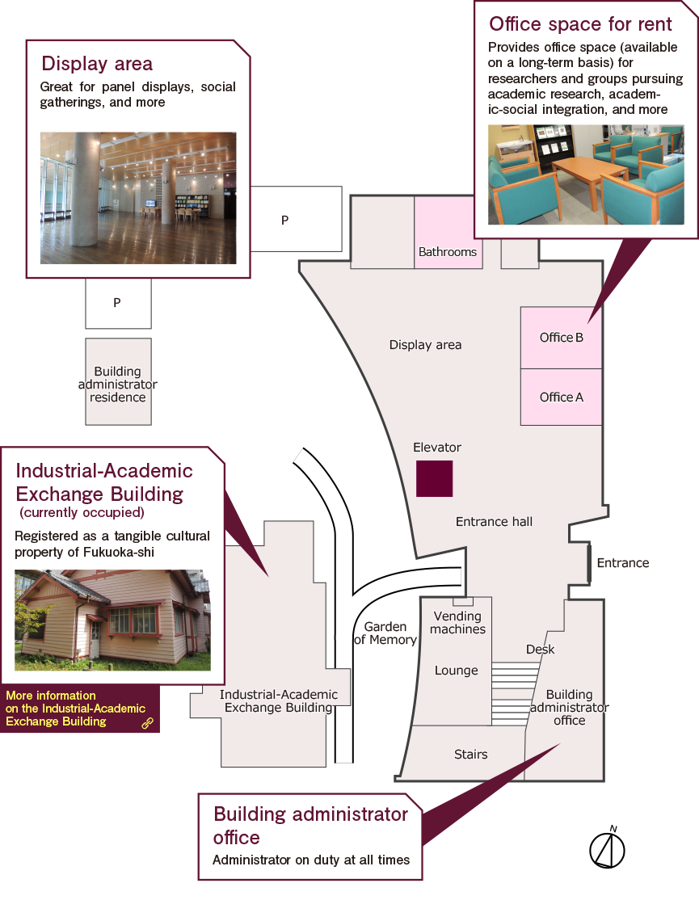
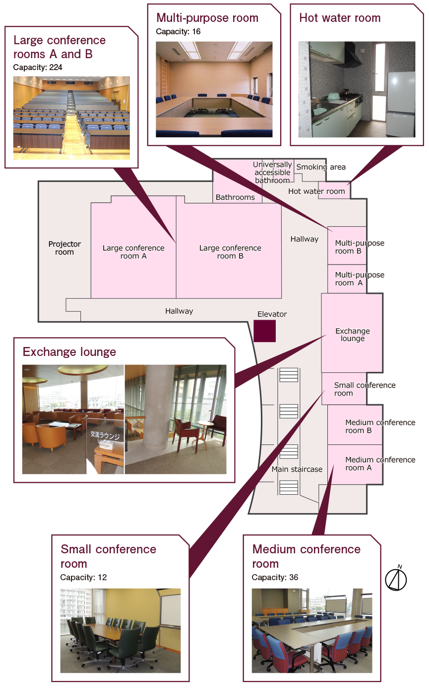

Welcome to ICECCS'17!
The 22nd International Conference on Engineering of Complex Computer Systems (ICECCS 2017), The Kyushu University, November 6-8, 2017, Fukuoka, Japan. Complex computer systems are common in many sectors, such as manufacturing, communications, defense, transportation, aerospace, hazardous environments, energy, and health care. These systems are frequently distributed over heterogeneous networks, and are driven by many diverse requirements on performance, real-time behavior, fault tolerance, security, adaptability, development time and cost, long life concerns, and other areas. Such requirements frequently conflict, and their satisfaction therefore requires managing the trade-off among them during system development and throughout the entire system life. The goal of this conference is to bring together industrial, academic, and government experts, from a variety of user domains and software disciplines, to determine how the disciplines' problems and solution techniques interact within the whole system. Researchers, practitioners, tool developers and users, and technology transition experts are all welcome. The scope of interest includes long-term research issues, near-term complex system requirements and promising tools, existing complex systems, and commercially available tools.
- 9:00 - 9:15
Conference Opening
- 9:15 - 10:30
Keynote by
- 10:30 - 11:00
Coffee Break
- 11:00 - 12:30
Session 1:
Session Chair: David Lo
Matthieu Jimenez, Mike Papadakis and Yves Le Traon. Vulnerability Prediction Models: A case study on the Linux Kernel Alessio Viticchie, Leonardo Regano, Marco Torchiano, Cataldo Basile, Mariano Ceccato, Paolo Tonella and Roberto Tiella. Assessment of Source Code Obfuscation Techniques Marco di Biase, Magiel Bruntink and Alberto Bacchelli. A security perspective on code review: The case of Chromium - 12:30 - 13:00
Lunch
- 13:30 - 15:00
Session 2: Supporting Software Developers
Session Chair: Leon Moonen
Xueliang Li and John P. Gallagher. A Source-level Energy Optimization Framework for Mobile Applications Maurício Aniche, Christoph Treude, Andy Zaidman, Arie van Deursen and Marco Gerosa. SATT: Tailoring Code Metric Thresholds for Different Software Architectures Andrea D'Souza, Di Yang and Cristina Lopes. Collective Intelligence for Smarter API Recommendations in Python - 15:00 - 15:30
Coffee Break
- 15:30 - 17:30
Session 3: Engineering Track Papers
Jiang Ming, Dinghao Wu. BinCFP: Efficient Multi-threaded Binary Code Control Flow Profiling Allan Blanchard, Nikolai Kosmatov, Matthieu Lemerre, Frederic Loulergue. CONC2SEQ : A FRAMA-C Plugin for Verification of Parallel Compositions of C Programs Tushar Sharma, Girish Suryanarayana. Augur: Incorporating Hidden Dependencies and Variable Granularity in Change Impact Analysis Benjamin Holland, Ganesh Ram Santhanam, Payas Awadhutkar, Suraj Kothari. Statically-informed Dynamic Analysis Tools to Detect Algorithmic Complexity Vulnerabilities Quentin Stiévenart, Maarten Vandercammen, Wolfgang De Meuter, Coen De Roover. SCALA-AM: A Modular Static Analysis Framework Jochen Quante. A Generic Program Interpreter for Arbitrary Abstractions
- 9:00 - 10:30
Session 4: Code Similarity and Fault Localization
Session Chair: Árpád Beszédes
Vincenzo Musco, Martin Monperrus and Philippe Preux. Mutation-Based Graph Inference for Fault Localization Adriano de Paula, Eduardo Guerra, Hitesh Sajnani, Cristina Lopes and Otavio Lemos. An Exploratory Study of Interface Redundancy in Code Repositories Chaiyong Ragkhitwetsagul, Jens Krinke and David Clark. Similarity of Source Code in the Presence of Pervasive Modifications - 10:30 - 11:00
Coffee Break
- 11:00 - 12:30
Session 5: Software Testing
Session Chair: Mariano Ceccato
Min Gao, Lei He, Rupak Majumdar and Zilong Wang. llsplat: Improving Concolic Testing by Bounded Model Checking Gergő Balogh, Tamás Gergely, Árpád Beszédes and Tibor Gyimóthy. Are My Unit Tests in the Right Package? Marinos Kintis, Mike Papadakis, Andreas Papadopoulos, Evangelos Valvis and Nicos Malevris. Analysing and Comparing the Effectiveness of Mutation Testing Tools: A Manual Study - 12:30 - 13:00
Lunch
- 13:30 - 15:00
Session 6: Code Transformation and Static
Session Chair: Andrea Mocci
Tukaram Muske and Alexander Serebrenik. Survey of Approaches for Handling Static Analysis Alarms Nelson Lossing, Pierre Guillou and Francois Irigoin. Effects Dependence Graph: A Key Data Concept for C Source-to-Source Compilers Gábor Antal, Dávid Havas, István Siket, Árpád Beszédes, Rudolf Ferenc and József Mihalicza. Transforming C++11 Code to C++03 to Support Legacy Compilation Environments - 15:00 - 15:30
Coffee Break
- 15:30 - 17:00
Session 7: Empirical Studies
Session Chair: Alexander Serebrenik
Dave Binkley and Dawn Lawrie. A Case for Software Specific Natural Language Techniques Stefan Fischer, Lukas Linsbauer, Roberto Erick Lopez-Herrejon and Alexander Egyed. A Source Level Empirical Study of Features and Their Interactions in Variable Software Leon Moonen, Stefano Di Alesio, Thomas Rolfsnes and Dave Binkley. Exploring the Effects of History Length and Age on Mining Software Change Impact - 17:00 - 17:15
Conference Closing
- 17:15 - 18:00
Open Steering Committee Meeting
Overview
Over the past several years, we have seen a rapid rising emphasis on design, implement and manage complex computer systems which are present in every aspect of human activities, such as manufacturing, communications, defense, transportation, aerospace, hazardous environments, energy, and health care. The complex computer systems are frequently distributed over heterogeneous networks and processing large amount data. Complexity arises from many factors, including the dynamic environments and scenarios these systems operate in; demanding and sometimes conflicting requirements in functionality, efficiency, scalability, security, dependability and adaptability; as well as the large variation in development methodology, programming languages and implementation details. The key issues in these systems include performance, real-time behavior, fault tolerance, security, adaptability, development time and cost, and long life concerns.
The goal of this conference is to bring together industrial, academic, and government experts, from a variety of application domains and software disciplines, to discuss how the disciplines' problems and solution techniques interact within the whole system. Researchers, practitioners, tool developers and users, and technology transfer experts are all welcome. The scope of interest includes long-term research issues; near-term requirements and challenges; established complex systems; emerging promising tools; and retrospective and prospective reflections of research and development into complex systems.
Scope and Topics
Authors are invited to submit papers describing original, unpublished research results, case studies and toolsed research results, case studies and tools. Papers are solicited in all areas related to complex computer-based systems, including the causes of complexity and means of avoiding, controlling, or coping with complexity. Topic areas include, but are not limited to:
- Requirement specification and analysis
- Verification and validation
- Security and privacy of complex systems
- Model-driven development
- Reverse engineering and refactoring
- Achitecture software
- Big Data Management
- Ambient intelligence, pervasive computing
- Ubiquitous computing, context awareness, sensor networks
- Design by contract
- Agile methods
- Safety-critical & fault-tolerant architectures
- Adaptive, self-managing and multi-agent systems
- Real-time, hybrid and embedded systems
- Systems of systems
- Cyber-physical systems and Internet of Things (IoT)
- Tools and tool integration
- Industrial case studies
- ...
Different kinds of contributions are sought, including novel research, lessons learned, experience reports, and discussions of practical problems faced by industry and user domains. The ultimate goal is to build a rich and comprehensive conference program that can fit the interests and needs of different classes of attendees: professionals, researchers, managers, and students. A program goal is to organize several sessions that include both academic and industrial papers on a given topic and culminate panels to discuss relationships between industrial and academic research.
Full Papers
Full papers are divided into two categories: Technical Papers and Experience Reports. The papers submitted to both categories will be reviewed by program committee members, and papers accepted in either category will be published in the conference proceedings. Technical papers should describe original research, and experience reports should present practical projects carried out in industry, and reflect on the lessons learnt from them.Short Papers
Short paper submissions describe early-stage, ongoing or PhD research. All short papers will be reviewed by program committee members, and accepted short papers will be published in the conference proceedings.Paper Submissions
Submitted manuscripts should be in English and formatted in the style of the double-column CPS format. Full papers should not exceed 10 pages, and short papers should not exceed 4 pages, including figures, references, and appendices. All submissions should be in PDF format. Submissions not adhering to the specified format and length may be rejected immediately, without review.Please prepare your manuscripts in accordance to the CPS guidelines: http://www.ieee.org/conferences_events/conferences/publishing/templates.html.
We invite all prospective authors to submit their manuscripts via the ICECCS'17 portal, hosted on EasyChair https://easychair.org/conferences/?conf=iceccs2017
Conference Proceedings
The conference proceedings will be published by Conference Publishing Services (CPS) and submitted for EI indexing.
Important Dates
- Abstract submission:
5th June 201719th June 2017 (Extended!) - Paper submission:
19th June 20173rd July 2017 (AoE time) (Extended!) - Notification of acceptance: 14th August 2017
- Camera ready copy due: 11th September 2017
ATTENTION
Submission dates for workshop papers may differ, so please check separate Calls for Papers on the workshop websites. For enquiries, please contact iceccs2017@easychair.org2017 International Workshop On Complex System Engineering (WOCSE '17)
As software systems are getting increasingly complex, we need new methods and tools to create and maintain them.
WOCSE '17 aims at bringing together researchers from academia and industry to present and discuss novel approaches to engineering complex systems.
Topics of interest include (but are not limited to) the following areas:
- Agile methods
- Model-driven development
- Software achitecture
- Managed languages and runtimes for multi-language systems
- Big-data analytics frameworks and applications
- Ambient intelligence and pervasive computing
- Ubiquitous computing, context awareness, and sensor networks
- Adaptive and self-managing systems
- Cyber-physical systems and Internet of Things (IoT)
- Real-time and safety-critical systems
- Static and dynamic program analysis and verification
- Debugging, testing, and profiling
- Security and privacy
- Reverse engineering and refactoring
- Case studies
Submissions must be unpublished and not simultaneously submitted to another venue.
They may be up to 4 pages and have to be written in English, formatted in the style of the double-column CPS format:
http://www.ieee.org/conferences_events/conferences/publishing/templates.html
All submissions must be in PDF. Submissions not adhering to the specified format and length will be desk rejected.
The workshop proceedings will be published by Conference Publishing Services (CPS).
Submission site: http://easychair.org/conferences/?conf=wocse2017
Important Dates:
- Paper submission: Sept. 1, 2017 (AoE)
- Notification: Sept. 20, 2017
- Camera-ready paper: Sept. 25, 2017
- Workshop: Nov. 5, 2017
Workshop Chairs:
- Walter Binder (University of Lugano, Switzerland; walter.binder@usi.ch)
- Jifeng Xuan (Wuhan University, China; jxuan@whu.edu.cn)
Program Committee (to be completed):
- Daniele Bonetta (Oracle, Austria)
- Lubomir Bulej (Charles University, Czech Republic)
- Hidehiko Masuhara (Tokyo Institute of Technology, Japan)
- Zhilei Ren (Dalian University of Technology, China)
- Niranjan Suri (US Army Research Laboratory, USA)
- Alex Villazon (Universidad Privada Boliviana, Bolivia)
- Xiaoyuan Xie (Wuhan University, China)
- Ingrid Chieh Yu (University of Oslo, Norway)
Call for Engineering Track Papers
In addition to the research track (see separate CFP), the 16th IEEE International Working Conference on Source Code Analysis and Manipulation (SCAM 2016) will also feature an Engineering Track. This track welcomes six-page papers that report on the design and implementation of tools for source code analysis and manipulation, as well as libraries, infrastructure, and the real world studies enabled by these advances. To be clear, this is not the addition of a new track to SCAM, which will remain a two track conference, but a significant expansion to the scope of the tools track of previous SCAMs.
What artefacts qualify as “engineering track” material?
- tools: software (or hardware!) programs that facilitate SCAMmy activities.
- libraries: reusable API-enabled frameworks for the above.
- infrastructure: while libraries are purely software, infrastructure can include projects that provide/facilitate access to data and analysis.
- data: reusable datasets for other researchers to replicated and innovate with.
- real world studies enabled by these advances. Here the focus is on how the {tool,infrastructure, etc} enabled the study, and not so much the study itself. Novelty of the research question is less important than the engineering challenges faced in the study.
A successful SCAM engineering track paper should:
- Fall under the topics mentioned for the SCAM 2016 research track.
- Discuss engineering work artefacts that has NOT been published before. However, previous work involving the tool, but for which the tool was not the main contribution, are acceptable.
- Motivate the use cases (and hence the existence) of the engineering work.
- Relate the engineering project to earlier work.
- Describe the experiences gained in developing this contribution.
Optionally (and encouraged):
- Any empirical results or user feedback is welcome.
- Contain the URL of a website where the tool/library/data etcetera can be downloaded, together with example data and installation guidelines, preferably but not necessarily open source.
- Contain the URL to a video demonstrating the usage of the contribution.
Note that the submission length has a limit of six pages, compared to the two to four pages of traditional tool demo papers. This gives authors enough space to discuss artefact motivation, design, and use cases in much more detail. For example, a use case would be well illustrated by a demo scenario with screenshots. The papers should be submitted electronically via the conference web site.
Each submission will be reviewed by at least three members of the engineering track program committee. Authors of accepted papers will be required to present their artefacts at the conference. All accepted engineering track papers will be published in the conference proceedings. The key criterion for acceptance is that the paper should (a) follow the above mentioned guidelines and (b) make an original contribution that can benefit practitioners in the field now and/or others designing and building artefacts for source code analysis and manipulation. The artefacts can be in an early research prototype or a polished product ready for deployment. Papers about commercial products are allowed, as long as the guidelines described above are followed.
Videos and other demo material may be taken into account by reviewers as they review the paper. However, such material will not become part of the permanent record of the conference, so the paper should be self contained. In order to preserve the anonymity of the reviewers, such material should be hosted on an anonymous public source (e.g., youtube), or made available in such a way that the tools chair can download them once and redistribute them to reviewers.
Proceedings
All accepted papers will appear in the proceedings which will be published by the IEEE Computer Society Press.
Important Dates
- Abstract Deadline: 20 June 2016
- Paper Deadline: 24 June 2016
- Notification: 29 July 2016
- Camera Ready Deadline: 12 August 2016
Submission
Six pages IEEE format and can be submitted via EasyChair. Please use the IEEE templates in preparing your manuscripts:
- Latex template: use \documentclass[conference]{IEEEtran}
- Microsoft Word template
General Co-Chairs
Program Co-Chairs
- Zhenjiang Hu, National Institute of Informatics, Japan
- Guangdong Bai, Singapore Institute of Technology, Singapore
Publicity Co-Chairs
- Naoyasu Ubayashi, Kyushu University, Japan
- Lei Ma, Harbin Institute of Technology, China
Publication Chair
- Yun Lin, National University of Singapore, Singapore
Local Co-Chairs
- Yaokai Feng, Kyushu University, Japan
- Haibo Yu, Shanghai Jiao Tong University, China
Program Chair
- Zhenjiang Hu, National Institute of Informatics, Japan
- Guangdong Bai, Singapore Institute of Technology, Singapore
Program Committee Member
- Etienne Andre, Universite Paris 13, France
- Cyrille Artho, KTH Royal Institute of Technology, Sweden
- Luciano Baresi DEI, Politecnico di Milano, Italy
- Amel Bennaceur, Open University, UK
- Radu Calinescu, University of York, UK
- Naipeng Dong, National University of Singapore, Singapore
- Carlo Alberto Furia, Chalmers University of Technology, Sweden
- Sebastien Gerard, CEA LIST, France
- Esther Guerra, Universidad Autonoma de Madrid, Spain
- Fei He, Tsinghua University, China
- Daniel Kroening, Oxford University, UK
- Kung-Kiu Lau, The University of Manchester, UK
- Yang Liu, Nanyang Technological University, Singapore
- David Lo, Singapore Management University, Singapore
- Gerald Luettgen, University of Bamberg, Germany
- Lei Ma, Harbin Institute of Technology, China
- Xiaoxin Ma, Nanjing University, China
- Tiziana Margaria, University of Potsdam, Germany
- Dominique Mery, Universite de Lorraine, LORIA, France
- Paolo Nesi, University of Florence, Italy
- Jun Pang, University of Luxembourg, Luxembourg
- Robert Pettit, The Aerospace Corporation, United States
- Christian Prehofer, fortiss GmbH, Germany
- Bernhard Rumpe, RWTH Aachen University, Germany
- Cristina Seceleanu, Malardalen University, Sweden
- Volker Stolz, University of Oslo, Norway
- Jing Sun, The University of Auckland, New Zealand
- Jun Sun, Singapore University of Technology and Design, Singapore
- Kenji Tei, National Institute of Informaics, Japan
- Cong Tian, Xidian Univerity, China
- Naoyasu Ubayashi, Kyushu University, Japan
- Andre Van Hoorn, University of Stuttgart, Germany
- Tullio Vardanega, University of Padua, Italy
- Hai Wang, University of Aston, UK
- Hironori Washizaki, Waseda University, Japan
- Jing Xu, Nankai University, China
- Naijun Zhan, Lab of Computer Science, Institute of Software, Chinese Academy of Sciences, China
- Cheng Zhang, Google Canada, Canada
- Huibiao Zhu, East China Normal University, China
- Yamine Ait Ameur, Université de Toulouse, France
- Xiaohong Li, Tianjin University, China
- Kenji Taguchi, AIST, Japan
- Christos Tsigkanos, Politecnico Di Milano, Italy
- Ling Yuan, Huazhong University of Science and Technology, China
- Felicita Di Giandomenico, ISTI-CNR, Italy
ICECCS Steering Committee
- Jin Song Dong, National University of Singapore, Singapore
- Mike Hinchey, University of Limerick, Ireland
- Mark Lawford, McMaster University, Canada
- Xiaohong Li, Tianjin University, China
- Shaoying Liu, Hosei University, Japan
- Andrew Martin, University of Oxford
- Roy Sterritt, University of Ulster, USA
- Jing Sun, University of Auckland, New Zealand
Conference Venue
ICECCS 2017 will take place at the Nishijin Plaza of Kyushu University, Fukuoka, Japan.
Address
2-16-23 Nishijin, Sawara-ku, Fukuoka-shi, Fukuoka-ken
814-0002 Japan
Google Maps
Information zone

Meeting zone

Visa Information
Please consult with your nearest Japanese embassy/consulate or your travel agency for the visa and entry requirements. For those who need a visa to travel to Japan, an invitation letter for visa can be issued by local organizers. Please send all requests to haibo_yu@sjtu.edu.cn with the following information:
- Your name (as it appears on your passport) and mailing address
- Your registration confirmation number (you must register before requesting a visa support letter).
- If you have any papers accepted for the conference, please indicate the title of your paper and your paper ID
- Include an email address of where letter can be sent
Note that we can only provide invitation letters for visa to participants that have paid their registration fees. More details on Japan visa requirements can be found at here.
Registration
Registration for ICECCS 2017 is now open at Online Registration Site.
Note to Authors
Each accepted paper must have at least one author registered at a REGULAR rate. Papers for which the only registered authors are students must have one of the students register at the REGULAR rate.
The registration deadline for authors is 18 September 2017. The early registration deadline is 15 October 2017, and the late registration deadline is 3 November 2017.
Registration Fee
| Early | Late | on-site | |
|---|---|---|---|
| Main(Regular) | 80,000 JPY | 95,000 JPY | 100,000 JPY |
| Main(PC member) | 70,000 JPY | 85,000 JPY | 90,000 JPY |
| Student | 60,000 JPY | 75,000 JPY | 80,000 JPY |
*ICECCS Registration Includes: ICECCS attendance including Lunch Monday through Wednesday, Reception on Sunday, Banquet on Tuesday, and ICECCS Proceedings.
Cancellation Policy
Notification of cancellation must be made in writing (by email) to the Conference Secretariat (iceccs17@conferenceservice.jp). Cancellations will be accepted until Oct. 15, Sun. 23:59. When making a reimbursement, the Conference Secretariat will retain JPY 10,000 from prepaid registration fee as a processing fee. After Oct. 15, Sun. 24:00, no refunds will be made for any reasons.
If you have any questions about the registration, please contact the Conference Secretariat (iceccs17@conferenceservice.jp).
Full Papers
- Efficient Parameter Synthesis Using Optimized State Exploration Strategies
Hoang Gia Nguyen, Étienne André and Laure Petrucci - TLSsem: A TLS Security-Enhanced Mechanism against MITM Attacks in Public WiFis
Wei Yang, Xiaohong Li, Zhiyong Feng and Jianye Hao - Integrating Tools: Co-Simulation in UPPAAL using FMI-FMU
Peter Gjøl Jensen, Kim Guldstrand Larsen, Axel Legay and Ulrik Nyman - Extending ERS for Modelling Dynamic Workflows in Event-B
Dana Dghaym, Michael Butler and Asieh Salehi Fathabadi - Distributed Object-Oriented Design of Autonomous Control Systems for Connected Vehicle Platoons
Sebti Mouelhi, Daniela Cancila and Amar Ramdane-Cherif - BigrTiMo-A Process Algebra for Structure-aware Mobile Systems
Wanling Xie and Huibiao Zhu - Model Driven Method to Design and Analyze Secure Architectures of Systems-of-Systems
Jamal El Hachem, Tarek Al Khalil, Vanea Chiprianov, Ali Babar and Philippe Aniorte - Learning Likely Invariants to Explain Why a Program Fails
Long H. Pham, Jun Sun, Ly Ly Tran Thi, Jingyi Wang and Xin Peng - Search-based Uncertainty-wise Requirements Prioritization
Yan Li, Man Zhang, Tao Yue, Shaukat Ali and Li Zhang - Enhancing Knowledge Sharing in Stack Overflow via Automatic External Web Resources Linking
Sa Gao, Zhenchang Xing, Yukun Ma, Deheng Ye and Shang-Wei Lin - A Composition Mechanism for Refinement-Based Methods
Thai Son Hoang, Dana Dghaym, Colin Snook and Michael Butler - Class Modularization Using Indirect Relationships
Junha Lee, Dae-Kyoo Kim and Sooyong Park - Reachability Analysis of Self Modifying Code
Tayssir Touili and Xin Ye - A Unified Framework for Throughput Analysis of Streaming Applications under Memory Constraints
Xue-Yang Zhu
Short Papers
- Speeding up Type-specific Instrumentation for the Analysis of Complex Systems
Andrea Rosà and Walter Binder - Multi-modeling approach to performance engineering of Cyber-Physical Systems design
Lorenzo Pagliari, Raffaela Mirandola and Catia Trubiani - Formal Modeling and Automatic Code Synthesis for Robot System
Xinxin Li, Rui Wang and Yu Jiang - Towarding Solving Decision Making Problems Using Probabilistic Model Checking
Ling Shi, Shuang Liu, Jianye Hao, Jun Yang Koh and Jin Song Dong - Software Reliability Modeling and Analysis via Kernel-based Approach
Kei Okumura, Hiroyuki Okamura and Tadashi Dohi - Evaluating Suitability of Applying Blockchain
Sin Kuang Lo, Xiwei Xu, Yin Kia Chiam and Qinghua Lu - Experimental Investigation on Impact of Cyber Attacks on Water Distribution Systems
Sridhar Adepu, Gyanendra Mishra, Venkata Reddy Palleti and Aditya Mathur - Decomposition and Collaboration of Industrial Control System with Resource Constraints
Ju Li, Jiawen Xiong, Xia Mao, Jianqi Shi, Xin Ye and Yanhong Huang - Study of Software-Related Causes in the FDA Medical Device Recalls
Zhicheng Fu, Chunhui Guo, Zhenyu Zhang, Yu Jiang, Lui Sha and Shangping Ren - Functional Requirements-Based Automated Testing for Avionics
Youcheng Sun, Martin Brain, Daniel Kroening, Andrew Hawthorn, Thomas Wilson, Florian Schanda, Francisco Javier Guzmán Jiménez, Simon Daniel, Chris Bryan and Ian Broster
Keynote Speakers
Verified Secure Routing: The Verified Scion Project
David Basin (ETH Zurich, Switzerland)
Abstract
Routing is at the heart of the Internet and has been a continual source of security problems since its expansion in the 1980s. SCION is a new approach to the Internet, which offers dramatically better security properties than we currently have. We describe a collaborative effort, the Verified Scion Project, at ETH Zurich that aims to verify Scion, going the full distance from high-level network-wide properties down to the code running on SCION routers. We will explain the issues involved, the approach we take, the progress we have made, and perspectives for the future.
The work reported on is joint work between three groups at ETH Zurich: my Information Security Group, the Network Security Group of Adrian Perrig, and the Programming Methodology Group of Peter Mueller.
Biography
David Basin is a full professor within the Department of Computer Science, ETH since 2003, where he heads the Information Security Group. He received his bachelor’s degree in mathematics from Reed College in 1984, his Ph.D. from Cornell University in 1989, and his Habilitation from the University of Saarbrücken in 1996. His appointments include a postdoctoral research position at the University of Edinburgh (1990 - 1991), and afterwards he led a subgroup, within the programming logics research group, at the Max-Planck-Institut für Informatik (1992 - 1997). From 1997 - 2002 he was a full professor at the University of Freiburg where he held the chair for software engineering.His research focuses on Information Security, in particular on foundations, methods, and tools for modeling, building, and validating secure and reliable systems. He is Editor-in-Chief of the ACM Transactions on Privacy and Security and of Springer-Verlag's book series on Information Security and Cryptography. He is also the founding director of ZISC, the Zurich Information Security Center, which he led from 2003-2011.
Exploring Similar Code - From Code Clone Detection to Provenance Identification
Katsuro Inoue (Osaka University, Japan)
Abstract
Code clone analysis is an activity to find similar code snippets in source code. Nowadays it becomes one of popular analyses characterizing redundancy and maintainability of source code. It has been studied for more than 20 years, and it is still a very active and attractive research field in Software Engineering. In this talk, we will present history and evolution of our research activities on code clone and related areas. Starting from an industry request for code maintenance, we have developed various tools and applied them to various fields. We will show also our current and future direction toward identifying code provenance in huge and complex ecosystem of Open Source Software.
Biography
Katsuro Inoue received his Ph.D. from Osaka University in 1984. He was an associate professor of University of Hawaii at Manoa from 1984 to 1986. After becoming an assistant professor of Osaka University in 1986, he has been a professor since 1995.His research interest includes software engineering, especially software maintenance, software reuse, empirical approach, program analysis, and code clone detection. He has been working for ICSE (International Conference on Software Engineering) and many other conferences on software engineering as a PC or other activities.
Cyber-security, The Journey from Formal Methods, Program Analysis to Data Analytics
Yang Liu (Nanyang Technological University, Singapore)
Abstract
Cyber-security is a complex system research, which requires the knowledge across all layers of the computer architecture. In this talk, I would like to share our attempts to solve security problems using various techniques. Starting from formal methods, we have applied formal modeling and reasoning to security designs and implementations on the topics related to security protocols, virtualization systems and Android apps. These efforts lead to our recent research project "Securify: A Compositional Approach of Building Security Verified System", which aims at building secure and verifiable systems ground-up. Security verification and building attack-free systems are very challenging tasks in the view of the size and the complexity of the systems. To solve the scalability problem, we start to explore various program analysis techniques to enhance the state-of-the-art malware and vulnerability detection, which generates encouraging results in Javascript/Android malware and binary vulnerabilities hunting. Along the way, we have collected sizable malware/vulnerabilities samples, which are further used to improving security analysis, understand the security trend, attack attribution/correlation and eventually provide high-level intelligence.
Biography
Dr Liu Yang graduated in 2005 with a Bachelor of Computing (Honours) in the National University of Singapore (NUS). In 2010, he obtained his PhD and started his post doctoral work in NUS, MIT and SUTD. In 2011, Dr Liu is awarded the Temasek Research Fellowship at NUS to be the Principal Investigator in the area of Cyber Security. In 2012 fall, he joined Nanyang Technological University as a Nanyang Assistant professor. He is currently the director of the cybersecurity lab in NTU.
Dr. Liu specializes in software verification, security and software engineering. His research has bridged the gap between the theory and practical usage of formal methods and program analysis to evaluate the design and implementation of software for high assurance and security. His work led to the development of a state-of-the-art model checker, Process Analysis Toolkit (PAT). This tool is used by research institutions in over 80 countries for research and education. By now, he has more than 150 publications in top tier conferences and journals and is leading an active research team working on various cybersecurity problems.
Banquet
The banquet will be held Sunday night at 7pm @ the Boxcar Arcade, less than a 10 minute walk from the convention center. The Boxcar features over 70 original games (e.g., Tetris, Mortal Kombat, NBA Jam, etc.), pinball, air hockey, and shuffle board that attendees can play while socializing. The evening will feature an informal spread from The Pit, featuring BBQ AND excellent vegetarian options, and of course a selection from Boxcar’s rotating 24 craft drafts.
Post-Conference Bike Ride
On the Tuesday following the conference (Oct. 4th) there will be a group bike ride from the conference venue to the Trophy Brewery, an approximately 3.2 mile (5.15 km) trip in one direction. More info and signup on the ICSME social events page.